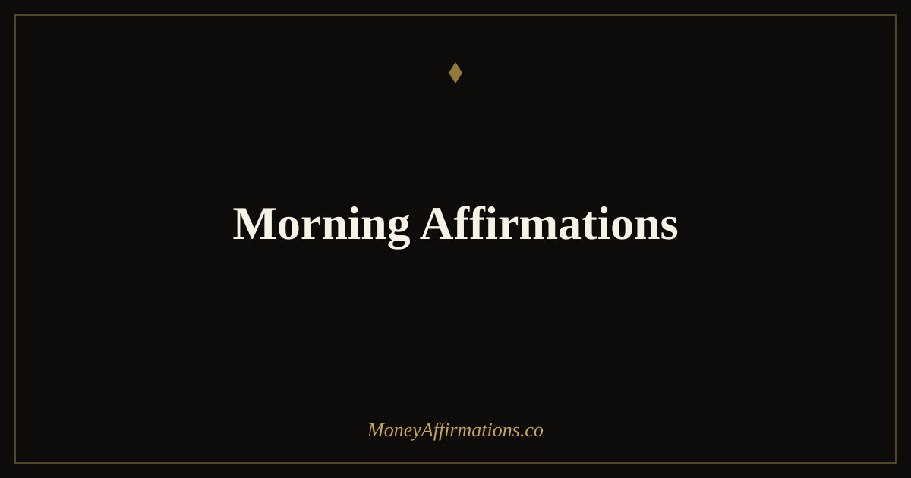

Morning Affirmations: 30 Statements to Start Your Day Right

The first thoughts you have each morning are not neutral. They set the emotional and cognitive tone for every decision, interaction, and financial choice that follows. Most people wake up and immediately absorb news, notifications, or the accumulated weight of their to-do list. By the time they have their first coffee, their nervous system has already been primed for stress, comparison, or overwhelm — and their financial decisions reflect that state all day.
Morning affirmations interrupt that pattern. These 30 statements are designed to give your first conscious moments of the day a different orientation — one built on clarity, capability, and genuine openness to prosperity. They do not require a long ritual. Five minutes of intentional attention, before the noise begins, is enough to change the lens through which the entire day is experienced.
What are morning affirmations?
Morning affirmations are present-tense statements used at the start of the day to deliberately shape your mindset before external demands take over. They are not simply positive thoughts — they are specific beliefs you are consciously rehearsing until they become your default orientation. When the focus is on money and prosperity, they are particularly powerful because so many financial decisions are made in the morning: what to spend, what to prioritise, what opportunities to pursue or ignore.
What distinguishes effective morning affirmations from ineffective ones is specificity and believability. A statement that feels completely disconnected from your current reality produces resistance rather than shift. The affirmations below are designed to be expansive without being implausible — grounded enough to accept, stretched enough to create genuine forward movement toward a more prosperous life.
30 morning affirmations
- This morning I choose to meet the day from a place of abundance, not anxiety.
- I am grounded, capable, and clear about my financial direction.
- Today I make decisions that reflect my growing financial confidence.
- I wake up to a life that is improving in every meaningful way.
- My mind is fresh, my intentions are clear, and prosperity is available to me today.
- I am worthy of a good day, a good income, and a good financial future.
- Each morning I renew my commitment to the wealthy, stable life I am building.
- I am open to the opportunities this day has prepared for me.
- My energy is steady, my focus is sharp, and my financial goals are within reach.
- I start this day knowing that money can flow to me in ways I may not yet expect.
- I release yesterday's financial worries and step into today with a clear mind.
- This morning, I choose confidence over doubt in every financial decision I make.
- I am a person who manages money wisely and creates more of it through purposeful action.
- Today holds financial potential that I am ready and willing to recognise.
- I begin each day knowing that my skills, effort, and mindset are enough.
- Abundance is not something I chase — it is something I cultivate every morning.
- My morning sets the tone, and I choose prosperity, calm, and forward movement.
- I am grateful for this day and the financial possibilities it contains.
- My relationship with money grows healthier and stronger with each new morning.
- I have everything I need to make today a financially productive and aligned day.
- This morning I invest my attention in what matters most for my financial future.
- I trust my own judgement and follow through on the financial commitments I make.
- My mornings are powerful because I use them to set the direction of my entire day.
- I welcome wealth, wellbeing, and clarity as the themes of this morning.
- I am becoming more financially capable, more confident, and more prosperous every day.
- Today I act from abundance rather than reacting from fear.
- I greet this morning knowing that my financial life is moving in the right direction.
- My thoughts this morning are the foundation of my financial results this week.
- I am here, present, and ready for everything this prosperous day has to offer.
- Every morning is a new opportunity to build the financial life I deserve.
How to use these affirmations
Use morning affirmations before any screen time. This is non-negotiable if you want them to work. The moment you open a news feed, email, or social media app, you have handed the morning's emotional tone to external input. Keep your phone face-down or out of reach, sit upright in bed or in a chair, and read through five affirmations slowly. Say each one twice — once reading, once from memory with your eyes closed. The second repetition, even approximate, deepens the impression.
For financial focus specifically, add a brief written element. After your affirmations, write one sentence: "Today the most important financial action I can take is..." and name something concrete. It might be reviewing a bill, making a savings transfer, sending an email, or simply not making an impulsive purchase. The affirmation creates orientation; the written intention creates a target. Together they make the morning more than a ritual — they make it a direction. Pair this practice with morning affirmations for abundance if you want a fuller set focused specifically on receiving and openness.
The cortisol awakening response: why your morning brain is uniquely receptive
Within the first thirty minutes of waking, the brain experiences what researchers call the cortisol awakening response (CAR) — a natural surge of cortisol that primes the body and mind for the demands of the day. This surge is not inherently stressful; its biological purpose is to increase alertness, sharpen focus, and prepare the system for motivated action. However, the direction of that alertness is shaped by the first stimuli you encounter.
When you introduce calming, expansive, identity-affirming statements during this window, you are essentially directing the morning's neurological mobilisation toward growth rather than threat. The prefrontal cortex — responsible for planning, self-regulation, and decision-making — is activated and receptive during the CAR window. This means that beliefs rehearsed in the morning have a disproportionate influence on the quality of decisions made throughout the day. A 2019 study in the journal Cortex found that mood state in the first hour after waking predicted executive function performance across the following twelve hours. Morning affirmations work, in part, because they work with this biology rather than against it.
Tips to make them work faster
- Use them before screens, every time. The effectiveness of morning affirmations depends almost entirely on whether you do them before external noise resets your emotional baseline.
- Choose five, not thirty. Read the full list to find your current five. Depth with a few beats width with many — you will feel the difference within a week.
- Stand up while saying them. Posture affects cognitive state. Upright, open-chested delivery of affirmations produces measurably different physiological responses than slumped reading.
- Pair each session with one financial intention. Name one specific money-related action you will take today. Affirmations set orientation; intention creates movement.
- Practise for 21 consecutive days before evaluating. The neural encoding of new beliefs takes consistent repetition. Gaps in the first three weeks reset the process — commit to the streak.
Frequently Asked Questions
How many morning affirmations should I say each day?
Three to five is the most effective range for daily practice. Fewer than three can feel too brief to create a real shift in orientation; more than ten often leads to mechanical repetition where the words lose their meaning. Choose a small set that feels genuinely relevant to where you are right now, say them slowly and with attention, and rotate them every few weeks as your beliefs and goals evolve.
Should I say morning affirmations before or after I check my phone?
Before, without question. The first information your brain receives in the morning shapes how it filters the rest of the day. Checking news, social media, or email first fills that window with other people's priorities and emotional triggers. Using affirmations first sets your own orientation — financial, personal, and emotional — before external noise gets a chance to do it for you.
Can morning affirmations replace therapy or financial planning?
No — and they work best when they do not try to. Morning affirmations are a mindset tool, not a substitute for professional financial guidance or mental health support. What they do well is create a more receptive psychological state for using those resources effectively. A person who starts the day feeling capable and open makes better use of a financial plan than one who begins from anxiety or avoidance.
For a richer set of statements to carry into every part of your financial day, explore the full prosperity affirmations collection and build a practice that supports not just your mornings, but your whole financial life.